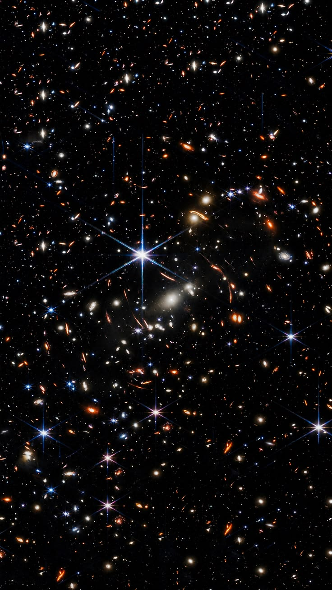

Toca la carta
Eres mi cielo, mi musa, mi heroína, una adicción tan grande que no es comparable con nada ni nadie más.
Quiero que siempre ilumines mis días y que siempre estés a mi lado.
Solo te amo a ti, y eso nunca cambiará.
Toca las estrellas que brillan

Toca la carta
Eres mi cielo, mi musa, mi heroína, una adicción tan grande que no es comparable con nada ni nadie más.
Quiero que siempre ilumines mis días y que siempre estés a mi lado.
Solo te amo a ti, y eso nunca cambiará.